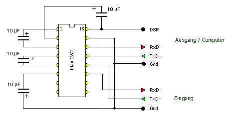

|
|
20.8 RS232 Wandler
Wandler für die serielle Schnittstelle
In der nachfolgenden Abbildung sehen sie einen seriellen
Schnittstellenwandler mit dem es möglich ist ältere, mit
3-Draht Schnittstellen ausgerüstete Geräte an einer
moderneren seriellen Computerschnittstelle auslesbar zu machen.
 Abbildung 1 - serieller Schnittstellenkonverter
Betrieben werden kann diese Schaltung mit Taschenrechnern,
Meßgeräten und sonstigen Geräten die eine einfache
serielle Schnittstelle besitzen. Die serielle Schnittstelle an ihrem
Computer stellen sie auf die Parameter ein die für die
entsprechenden Geräte notwending ist.
Käufliche serielle Adapterkabel bestehen idR aus nichts
anderem.
Als Basteltip kann ich hier noch sagen das diese Schaltung auf
einer so kleinen Plaine so aufgebaut werden kann das diese in ein
normales 25 poliges D-Sub Steckergehäuse hineinpasst.
Beachten Sie bitte das bei Verwendung einer solchen
Selbstbauschaltungen ihr Atari u.U beschädigt werden kann, der
Autor übernimmt keinerlei Haftung. Alle technisch notwedingen
Angaben wurden nach bestem Wissen und Gewissen gemacht.
Die Schaltung benötigt keine eigene Stromversorgung.
|
|
|